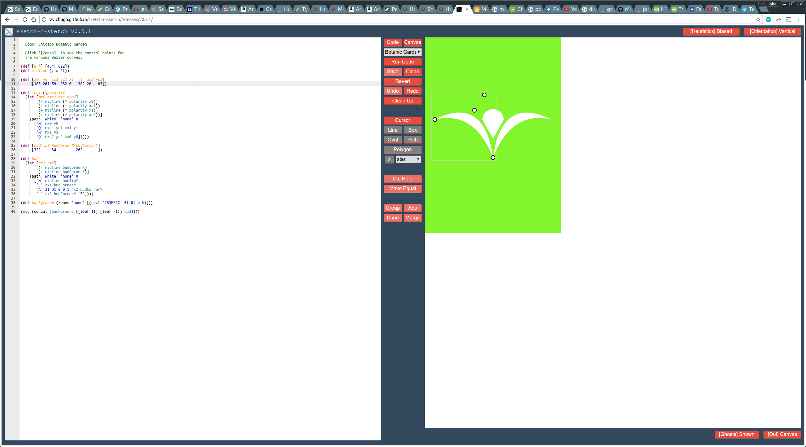

The world of graphical development has historically been split between two camps: most applications either use a programmatic or direct paradigm for graphical manipulation. Could a hybrid of these two methods result in graphical tools that can be both easier and quicker to use? Let’s explore the benefits of a ‘prodirect’ style of graphical development with the Sketch-n-Sketch tool.
Why Prodirect Manipulation?
What might be some of the advantages of enabling both direct and programmatic manipulation of a graphical object?
Tweaking graphical objects with programmatic manipulation is tedious
As anyone who has had the “trying to get this div / svg / other in the exact right place” problem is aware, tweaking quantitative values of a graphical object - whatever its representation - is often tedious through pure use of code. Whether you’re trying to tweak the position, size, color, or some other parameter of an object, you often have to iterate through a series of code alterations even when you may have an extremely clear idea of your intended change.
Establishing complex relations between graphical objects is hard with direct manipulation
One solution to the tweaking issues with programmatic manipulation is to do away with a coding interface entirely. Instead, many modern graphical applications enable direct manipulation of objects through the cursor. This method excels at quick, reactive changes of scalable parameters in an object. This generally leads to very quick graphical development, but what if there are parameters which have no easy way of being scaled, such as color? Or have difficulty being translated into cursor movements, such as having parameters of multiple objects relate to one another?
For the first question, the traditional solution has been the addition of an endless stream of widgets as an intermediary to affect these parameters. A color wheel. A luminance wheel. The entire toolbox for dealing with the unique complexities of text. While many graphical artists have become accustomed to the use of these widgets, the many layers of widgets - which essentially act as levers upon the underlying code of the graphical object - often leave something more to be desired.
The second question of relations between objects is much more difficult for cursor manipulation to address. Firstly, how do you define a relation between two graphical objects? You could say the size of two objects are related - where one object scales it’s size as the other object’s size is modified. What if you wish to relate other parameters? Or have size scale non-linearly? Without a complex and likely unintuitive set of widgets, there is no obvious way to enable this interaction using direct manipulation. To solve this problem, we need a method of defining a shared variable between multiple objects that can be toggled to the desired value. Fortunately, progammatic manipulation already solves this problem for us.
The combination of the direct manipulation’s tactile nature and programmatic manipulation’s mastery of higher order parameters results in a more comprehensive and rapid means of developing graphical content.
Implementing Symmetry with Sketch-n-Sketch
One simple relation that can be difficult to implement and modify in a direct manipulation tool is symmetry. Using the Sketch-n-Sketch tool, we can see how helpful prodirect manipulation can be in quickly producing a graphic design that can be easily revised upon request.
As our example, we will attempt to recreate our own SVG version of the logo of the Chicago Botanic Garden

To follow along, I would suggest going to this version of Sketch-n-Sketch. One can either create the example from scratch to get the feel of developing with Sketch-n-Sketch or you can take a look at the existing Botanic Garden logo in the dropdown menu and play around with that example.
1. Defining a background
First we would like to define the width and height of the background - for most designs this ranges in the few hundred pixels for each dimension. Remember that this background can easily be altered later either directly or via code.
It’s a good idea to look through the prelude for the little language, which can be found in the the dropdown menu of the Sketch-n-Sketch tool. Users of lisp and other functional programming languages will be fairly familiar with the basic functions, but might want to look at the SVG specific functions in the second half of the prelude.
(def [w h] [434! 622])
Note: It’s generally good practice to define the background (particularly the width and height) first when creating a new design. If you wish for certain aspects of the design to scale with the background - such as keeping a design centered - then other dimensions in the design will use these initial parameters as an input
Next the actual background rectangle positioned at (x,y) = (0,0), which can be done with a rect function colored a satisfying #83F52C green.
(def background (zones 'none' [(rect '#83F52C' 0! 0! w h)]))
Note: Exclamation marks, !, adjacent to a constant in the little language represents a value that is frozen, or not mutable via direct manipulation.
2. Drawing the SVG
To translate an object to an SVG representation, we use the svg function as defined in the prelude (it’s a good idea to look through the prelude, which can also be found in the the dropdown menu of the Sketch-n-Sketch tool).
(svg (concat [background]))
This should result in the following code
(def [w h] [434! 622])
(def background (zones 'none' [(rect '#83F52C' 0! 0! w h)]))
(svg (concat [background]))
Selecting ‘run code’ reveals the following image.

3. Defining a leaf & bud function
Next we would like to draw the actual logo upon the background. We would like to define the two ‘leaves’ and the ‘bud’ of the logo.
For the bud, we will need to use the path function in order to construct the arc that constitutes the top of the bud. The ‘path’ function in the little function is defined below:
(def path (\(fill stroke w d)
['path'
[ ['fill' fill] ['stroke' stroke] ['stroke-width' w] ['d' d] ]
[]]))
To learn more about how paths work in SVG, please take a look at the Mozilla tutorial, which provides a detailed description of the intricacies of bezier curves.
Since we are trying to instantiate a symmetric relationship, we will use a single x-variable for each object that we will be reflected across the bisecting midline of the SVG. So let’s define a variable for this bisecting midline:
(def midline (/ w 2!))
To define the bud, we will need to define 3 points, one for the bottom vertex (or ‘tip’), and two for the left and right ‘corners’ of the bud. Let’s define some constants to work with, namely the y coords, and a single x coord.
Importantly, the exact numbers below are just placeholders (you can come up with your own!) - we will use direct manipulation once the design is complete, to tweak to our desired proportions.
(def [budTipY budCornerX budCornerY]
[300 50 300 ])
Next, the ‘bud’ function:
(def bud
(let [rx1 rx2]
[(- midline budCornerX)
(+ midline budCornerX)]
(path 'white' 'none' 0
['M' midline budTipY
'L' rx1 budCornerY
'A' 31 31 0 0 1 rx2 budCornerY
'L' rx2 budCornerY 'Z'])))
rx1 and rx2 are merely reflected xcoord around the midpoint. Next, we use the path function to define the tip with M then the left and right corners with L. Don’t forget that the A, as it decides the curvature between the two corners! (we’ve use a default A input that creates a circular curvature)
Now we want to proceed with a similar procedure for the left and right leaves
(def [x0 y0 xc1 yc1 x1 y1 xc2 yc2]
[200 300 50 200 0 300 100 200])
(def leaf (\polarity
(let [mx0 mxc1 mx1 mxc2]
[(+ midline (* polarity x0))
(+ midline (* polarity xc1))
(+ midline (* polarity x1))
(+ midline (* polarity xc2))]
(path 'white' 'none' 0
['M' mx0 y0
'Q' mxc1 yc1 mx1 y1
'M' mx1 y1
'Q' mxc2 yc2 mx0 y0]))))
Once again, the initial coordinate variables can be educated guesses - there’s no need to worry about accuracy at this stage of development. The polarity argument determines whether the leaf is left (-1) or right (1). For the path in this case, the M represent the end points of a leaf, while the Q is a control point that determines the curvature of the path.
4. Adjusting constants using direct manipulation
Now we need to add these new objects to our svg object, as follows:
(svg (concat [background [(leaf 1!) (leaf -1!) bud]]))
With our initial, dummy variables the design looks as follows:

Hmmm… not quite right. Now we can use direct manipulation to adjust to make it look like our intended design. Cursor over the SVG to reveal the control points for the paths.

The entirety of the logo’s code is below:
; Logo: Chicago Botanic Garden
; Click '[Zones]' to see the control points for
; the various Bezier curves.
(def [w h] [791 908])
(def midline (/ w 2!))
(def [x0 y0 xc1 yc1 x1 y1 xc2 yc2]
[325 362 59 222 2 702 27 190])
(def leaf (\polarity
(let [mx0 mxc1 mx1 mxc2]
[(+ midline (* polarity x0))
(+ midline (* polarity xc1))
(+ midline (* polarity x1))
(+ midline (* polarity xc2))]
(path 'white' 'none' 0
['M' mx0 y0
'Q' mxc1 yc1 mx1 y1
'M' mx1 y1
'Q' mxc2 yc2 mx0 y0]))))
(def [budTipY budCornerX budCornerY]
[579 64 351 ])
(def bud
(let [rx1 rx2]
[(- midline budCornerX)
(+ midline budCornerX)]
(path 'white' 'none' 0
['M' midline budTipY
'L' rx1 budCornerY
'A' 31 31 0 0 1 rx2 budCornerY
'L' rx2 budCornerY 'Z'])))
(def background (zones 'none' [(rect '#83F52C' 0! 0! w h)]))
(svg (concat [background [(leaf 1!) (leaf -1!) bud]]))Thanks
I would like to thank Professor Ravi Chugh for the chance to work under him as a research assistant and TA for 2015 - 2016. Working under Prof. Chugh, I helped in the development of the Sketch-n-Sketch tool and created a number of the original examples.
Below you can find the abstract for the 2015 PLDI paper:
We present the Sketch-n-Sketch editor for Scalable Vector Graphics (SVG) that integrates programmatic and direct manipulation, two modes of interaction with complementary strengths. In Sketch-n-Sketch, the user writes a program to generate an output SVG canvas. Then the user may directly manipulate the canvas while the system infers real-time updates to the program in order to match the changes to the output. To achieve this, we propose (i) a technique called trace-based program synthesis that takes program execution history into account in order to constrain the search space and (ii) heuristics for dealing with ambiguities. Based on our experience writing more than 40 examples and from the results of a study with 25 participants, we conclude that Sketch-n-Sketch provides a novel and effective workflow between the boundaries of existing programmatic and direct manipulation systems.
- To learn more about prodirect manipulation visit the project site.
- To test out the latest version of the tool itself, check out the demo
- To read the PLDI paper, here is where it lives on arxiv